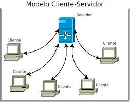

Una página web es un documento de la World Wide Web
«con dirección propia». Las páginas web son entregadas
por un servidor web al usuario y mostradas en un navegador
web para que actúe como «unidad de recuperación» de la información
almacenada en su interior.
Los tipos de páginas de web que existen más conocidos son: las tiendas
online o e-commerce, los blogs, las web corporativas, los buscadores,
las redes sociales, las aplicaciones web (correo electrónico, wikis…),
los portales, los portfolios de artistas, las plataformas de vídeo, los foros, etc.
CLIENTE / SERVIDOR

El modelo cliente/servidor revolucionó la forma en que se diseñan las
aplicaciones distribuidas. En este modelo, el cliente realiza solicitudes de servicios,
y el servidor proporciona esos servicios. Este enfoque permite la separación entre la
interfaz de usuario y la lógica de aplicación, lo que facilita la escalabilidad y la gestión de recursos.